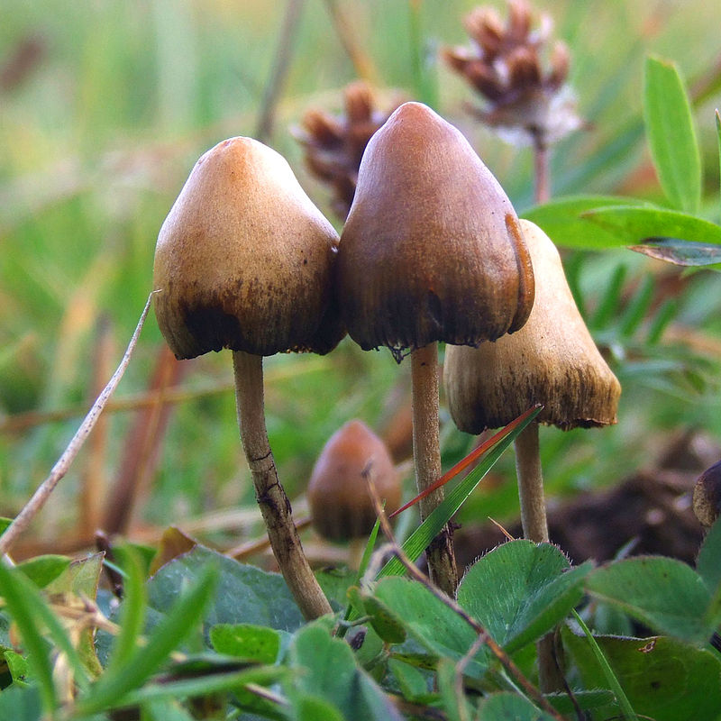

Although many people have a fear of mushroom poisoning by "toadstools", only a small number of the many macroscopic fruiting bodies commonly known as mushrooms and toadstools have proven fatal to humans.
Amanita arocheae, also known as the Latin American death cap,[1] is a mushroom of the large genus Amanita, which occurs in Colombia, Central America and South America. Deadly poisonous, it is a member of section Phalloideae and related to the death cap A. phalloides. It is known as hongo gris in Mexico, where it is found under oak. It differs from the death cap in the colour of its cap, which is brownish to grayish.